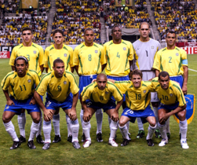
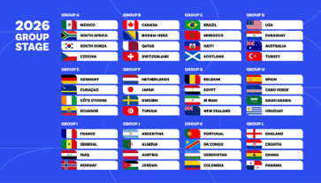

Participating Teams
National teams qualify for the FIFA World Cup through regional competitions. Each region has its own qualification process.
National Teams
The tournament includes teams from different parts of the world, giving fans the chance to watch many playing styles and cultures.

Group Stage Format
In the group stage, teams compete to earn points and qualify for the knockout rounds.
